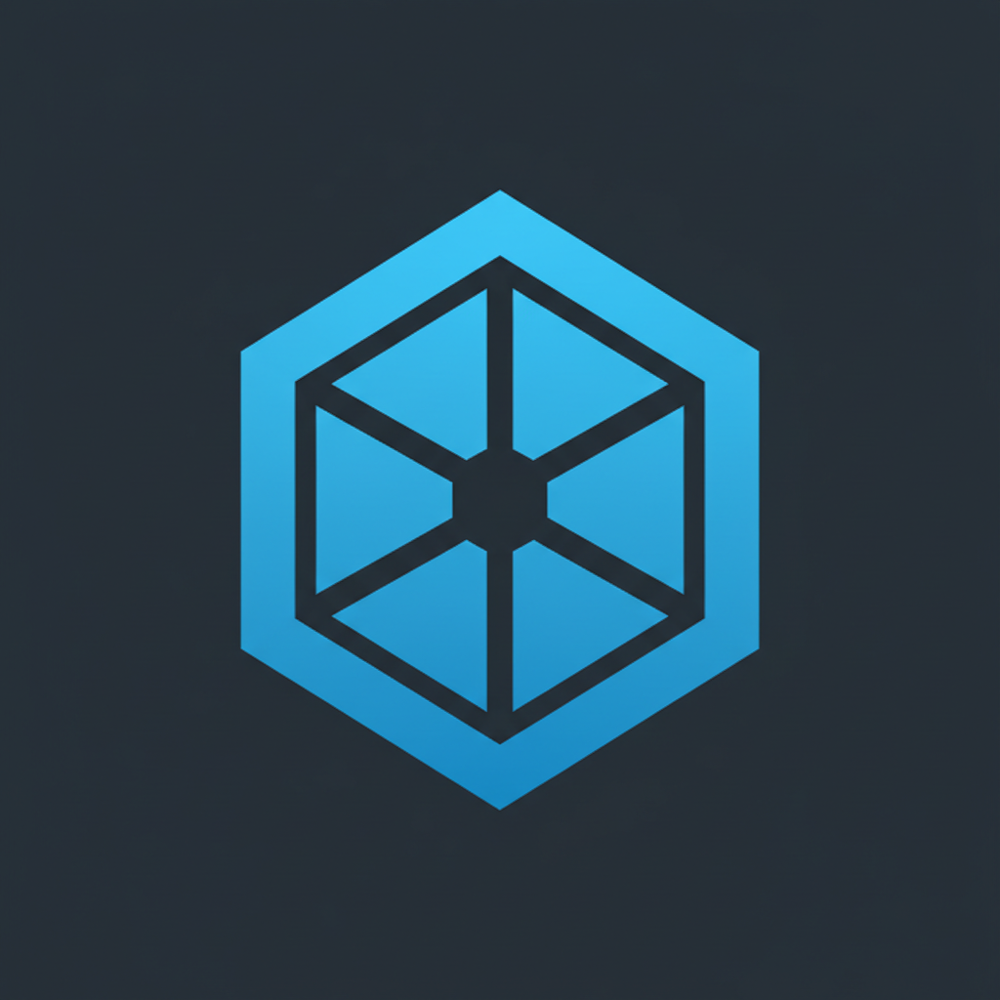

Access Control Systems
Door controllers, readers, smart credentials, schedules, permissions, and reporting configured for real-world operations.
Kryos Access Systems delivers enterprise-grade access control with smart credentials, cloud management, biometric facial recognition readers, visitor control, and real-time monitoring for modern facilities.
The brochure sharpens the story around a premium access stack: secure identity, easier management, and less friction for the people moving through your building every day.
Door controllers, readers, smart credentials, schedules, permissions, and reporting configured for real-world operations.
Touchless biometric entry designed for frictionless throughput, enhanced security, and modern tenant or employee experiences.
Manage permissions, live events, system health, and emergency actions securely from anywhere.
Flexible identity layers combining cards, PINs, biometrics, and mobile credentials for the right level of assurance.
Video intercom, visitor routing, and entry workflows that create a cleaner experience without sacrificing control.
Expert planning, professional installation, documentation, and responsive support from small business sites to enterprise deployments.
One secure platform can coordinate the full flow of entry, identity, and oversight across your property.
Deploy touchless biometric readers where fast identity verification and stronger assurance matter most.
Kryos is positioned for commercial and institutional sites that need dependable control, visibility, and manageable day-to-day operation.
The new brochure is now reflected on the site and also available as a direct download for teams that want a quick leave-behind or internal share.

Smart card, PIN, mobile credential, biometric, and multi-factor entry for every relevant door type.
Touchless readers designed for fast, secure identity verification in higher-security or higher-throughput areas.
Remote permissions, live events, lockdown controls, and system health monitoring from anywhere.
Share the intelligent access control overview as a polished PDF for stakeholders and decision-makers.
Open PDF →Projects move better when the path is clear. Kryos keeps the rollout simple from assessment through long-term support.
Review site needs, entry points, existing infrastructure, and operational requirements.
Map the right system architecture, hardware approach, and user workflow for the environment.
Install and configure with attention to finish quality, consistency, and practical usability.
Deliver documentation, training, and continuity so the system works long after go-live.
Book a walkthrough of access control, facial recognition readers, cloud management, and the right rollout strategy for your facility.